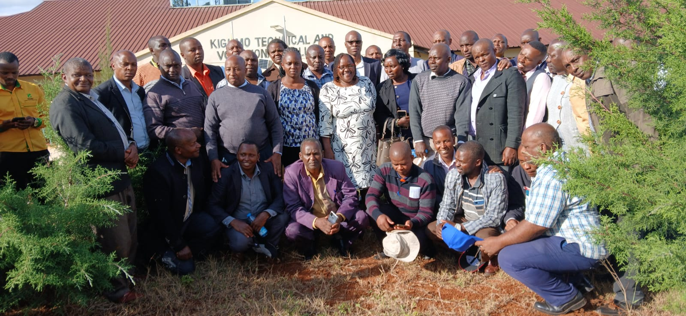

Kigumo TVC
Kigumo Technical And Vocational College
Toggle navigation
Home
About
About Kigumo TVC
Service Charter
QMS
Vision & Mission
Administration
Board of Management
Chief Principal
Deputy Principal Academics
Deputy Principal Administration
Dean of Students
Head of Departments / HOS
Departments
Academic
ICT
Agriculture
Mechanical
Building & Construction
Electrical & Electronics
Hospitality
Cosmetology
Fashion & Design
Non Academic
Board of Management
Sports
Guidance & Counselling
Science
Marketing & Advertisement
Music
Courses
News & Events
Contact us
Search

Previous
Next